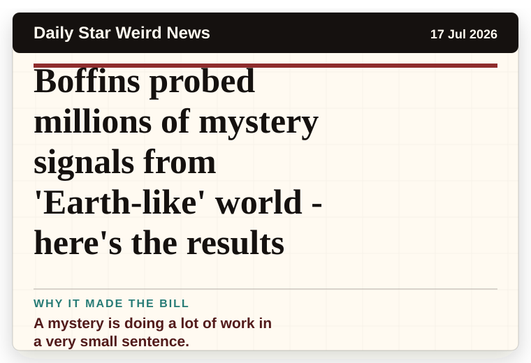
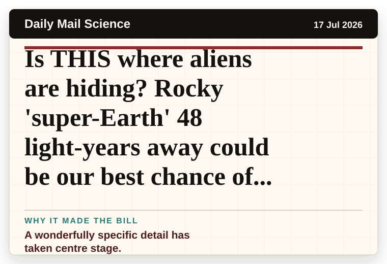
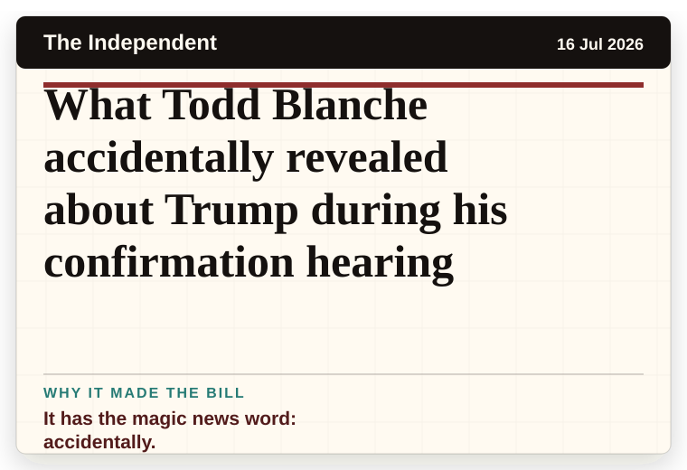
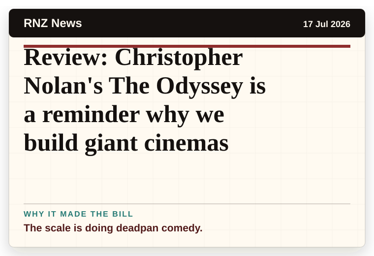
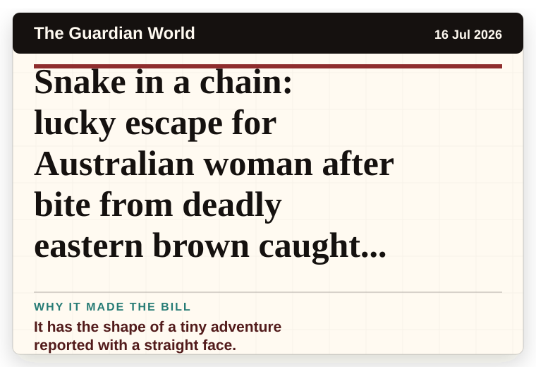

NT News
Australia
Court documents reveal Lil Wayne’s bizarre demands of his assistant
The headline is already trying not to laugh.
The latest daily picks, linked back to the original sources. Search the room, pick a source, or follow a headline out to the full story.
Record updated: 17 Jul 2026, 07:53 AM AEST
Showing 16 headline candidates from the refresh run completed on 17 Jul 2026, 07:53 AM AEST.
The headline is already trying not to laugh.

The headline is already trying not to laugh.

The headline is already trying not to laugh.

It has the shape of a tiny adventure reported with a straight face.

A wonderfully specific detail has taken centre stage.

A mystery is doing a lot of work in a very small sentence.

It has the shape of a tiny adventure reported with a straight face.

A wonderfully specific detail has taken centre stage.

A wonderfully specific detail has taken centre stage.

A very ordinary object has wandered into serious news.

A mystery is doing a lot of work in a very small sentence.

It has the magic news word: accidentally.

The scale is doing deadpan comedy.
The scale is doing deadpan comedy.

The scale is doing deadpan comedy.

It has the shape of a tiny adventure reported with a straight face.